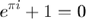

%{ ELECTRIC MACHINERY FUNDAMENTALS AC MACHINERY FUNDAMENTALS PAGE NO.243 EXAMPLE 4-1: CREATE a matlab program that models the behavior of a rotating magnetic field in the three-phase stator. m-file:mag_field.m m-file to calculate the net magnetic field produced by a three-phase stator. %} % set up the basic conditions. j=sqrt(-1); bmax=1; %normalize bmax to 1 freq=60;%60 Hz w=2*pi*freq;%angular velocity (rad/s) % first, generate the three component magnetic fields t=0:1/6000:1/60; Baa=sin(w*t).*(cos(0)+j*sin(0)); Bbb=sin(w*t-2*pi/3).*(cos(2*pi/3)+j*sin(2*pi/3)); Bcc=sin(w*t+2*pi/3).*(cos(-2*pi/3)+j*sin(-2*pi/3)); % calculate Bnet Bnet=Baa+Bbb+Bcc; % calculate a circle representing the expected maximum % value of Bnet circle=1.5*(cos(w*t)+j*sin(w*t)); %{ Plot the magnitude and direction of the resulting magnetic fields. Note that Baa is black, Bbb is blue, Bcc is magenta, and Bnet is red. %} for ii=1:length(t) %plot the reference circle plot(circle,'k'); hold on; %plot the four magnetic fields plot([0 real(Baa(ii))],[0 imag (Baa(ii))],'k','LineWidth',2); plot([0 real(Bbb(ii))],[0 imag (Bbb(ii))],'b','LineWidth',2); plot([0 real(Bcc(ii))],[0 imag (Bcc(ii))],'m','LineWidth',2); plot([0 real(Bnet(ii))],[0 imag (Bnet(ii))],'r','LineWidth',3); axis square; axis ([-2 2 -2 2]); drawnow; hold off; end
Error using imag
Not enough input arguments.
Error in mag_field (line 41)
plot([0 real(Baa(ii))],[0 imag (Baa(ii))],'k','LineWidth',2);

%$$B_net$$ % %{ When this program is executed, it draws lines corresponding to the three component magnetic fields as well as a line corresponding to the net magnetic field. Execute this program and observe the behavior of $$B_net$$ %}
%$$B_net$$